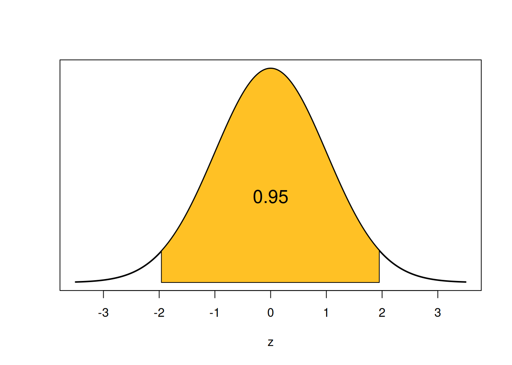
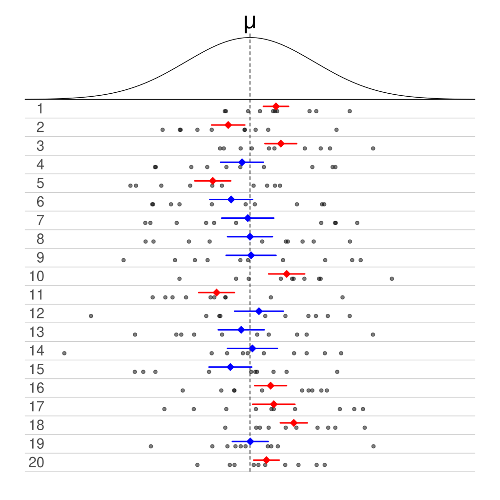
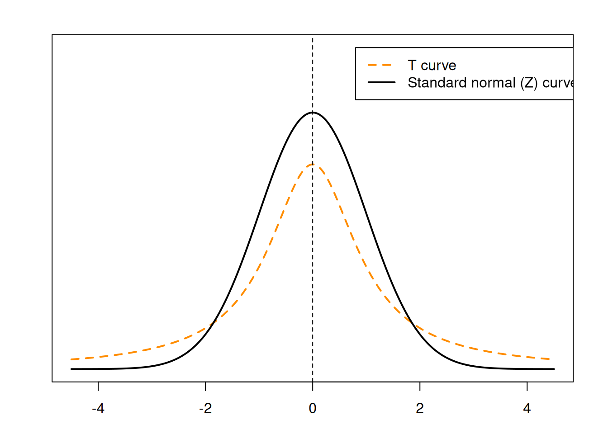
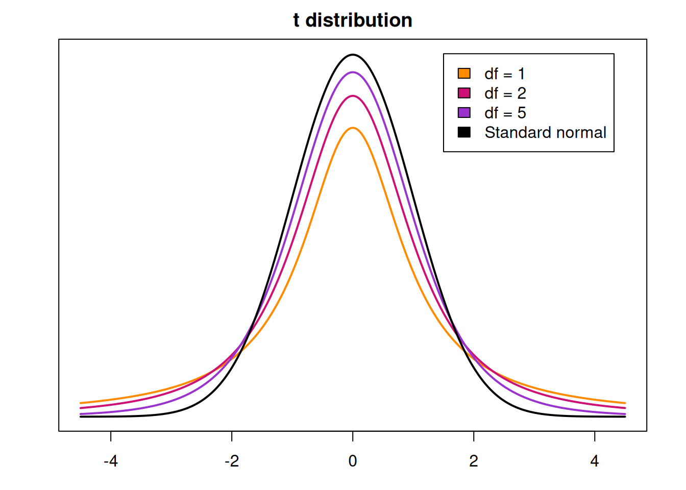
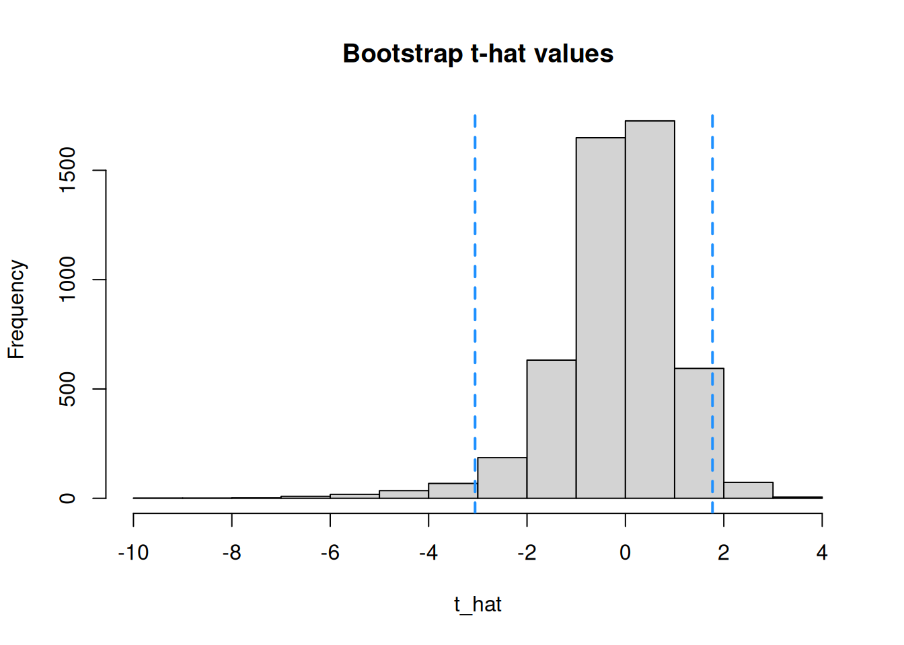

Chapter 6 Confidence Intervals
We’ve seen how to calculate a point estimate, which is a single “guess” about a parameter from our data. For example, use the observed sample mean \(\bar{x}\) to estimate the population mean \(\mu\). In this section, we’ll discuss interval estimation. Instead of a single guess, we’ll make a range of guesses that hopefully contain the true parameter.
6.1 Z confidence interval
Let’s look at a new example. To study the early growth of pine trees, a nursery worker records the heights (in cm) of 40 one-year-old red pine seedlings grown under identical conditions. \[\begin{align*} &2.6, 1.9, 1.8, 1.6, 1.4, 2.2, 1.2, 1.6, 1.6, 1.5, 1.4, 1.6, 2.3, 1.5, 1.1, 1.6 \\ &2.0, 1.5, 1.7, 1.5, 1.6, 2.1, 2.2, 1.0, 1.2, 1.2, 1.8, 1.7, 0.8, 1.5, 2.0, 2.2, 1.5, \\ &1.6, 2.2, 2.1, 1.6, 1.7, 1.7, 1.2 \end{align*}\]
Let’s use R to explore our data by finding some basic numeric summaries and making a few visuals.
seedlings <- c(2.6, 1.9, 1.8, 1.6, 1.4, 2.2, 1.2, 1.6, 1.6,
1.5, 1.4, 1.6, 2.3, 1.5, 1.1, 1.6, 2.0, 1.5,
1.7, 1.5, 1.6, 2.1, 2.2, 1.0, 1.2, 1.2, 1.8,
1.7, 0.8, 1.5, 2.0, 2.2, 1.5, 1.6, 2.2, 2.1,
1.6, 1.7, 1.7, 1.2)
mean(seedlings)## [1] 1.6625## [1] 0.38676

Our data is approximately normal, with mean 1.663 and standard deviation 0.387. As usual, we are interested in doing inference on the population mean. How can we improve the basic estimate of 1.663?
We’re going to build an interval estimate for \(\mu\) that is based on the point estimate \(\bar{x}\).

We hope that the true value of \(\mu\) is somehwere in this interval. How should we achieve this goal? A wider interval will have an easier time covering the true parameter. But if the interval is too wide, it’s not informative. We can pretty safely say that the mean seedling height is between 0 cm and 1,000,000 cm, but that doesn’t help us at all.
So, there is an inherent tradeoff with interval width, between the interval’s precision and its ability to cover the true parameter.
The formula for our interval estimate for \(\mu\) will look something like this: \[\text{Interval estimate} \;=\; (\bar{X} - \text { Margin}, \; \bar{X} + \text{ Margin})\] where \(\bar{X}\) is the sample mean. Notice that the interval is centered around \(\bar{X}\), ahd the Margin that we pick is equal to one-half the interval’s total width.
What should this margin be? In other words, how “far away” should we go from \(\bar{X}\) to get a useful interval estimate? Let’s try using a margin of 2 for the mean seedling height. \[1.663 \pm 2 \;=\; (1.663 - 2,\; 1.663 + 2) \;=\; (-0.337, 3.663)\] We estimate that the true mean is betwee n-0.337 abd 3.663 cm. A more general formula for an interval of with margin 2 is \[\bar{X} \pm \text 2 \; = \; (\bar{X} - 2,\; \bar{X} + 2).\] Remember, our goal is to have a high probability of covering the true parameter \(\mu\). Since the interval is random, we can then use the sampling distribution of \(\bar{X}\) to find the probability that \(\mu\) is in the interval. \[P(\text{we cover the right value}) \;=\; P(\bar{X} - 2 \;<\; \mu \;<\; \bar{X} + 2) \;=\; ?\] But this probability might turn out to be small. Choosing a margin of 2 is a little bit arbitrary. It might make sense for some contexts, but we can have data at all orders of magnitude. For example, if we use a margin of 2 lbs to estimate the mean weight of male black bears, our interval would be too narrow and the above coverage probability would be small.
We want to think about this interval problem in the opposite way. We choose a desired coverage probability, then find the margin that is required. We’re switching things so that the coverage probability is known, and the margin is the unknown we must solve for. \[P(\text{we cover the right value}) \;=\; P(\bar{X} - ? \;<\; \mu \;<\; \bar{X} + ?) \;=\; 1-\alpha\]
A confidence interval (CI) is an interval estimate with a pre-specified coverage probability \(1- \alpha\).
The quantity \(\alpha\) (alpha) can be interpreted as our willingness to make a mistake, and it’s something that we choose ourselves. We set \(\alpha\) to be a small probability, so that the coverage probability \(1 - \alpha\) is large.
The formula for the confidence interval margin \(?\) is based on the center and spread of our data. It uses quantiles of the standard normal distribution to guarantee our desired coverage probability.
Let’s build a CI for the true mean seedling height. Let’s use an \(\alpha\) of \(0.05\), which gives us a coverage probability of \(1 - \alpha = 0.95\). This is also called a “95% confidence interval”.
How are we going to get that specific coverage probability? Let’s start by looking at a probability of 0.95 on the standard normal bell curve.

The shaded area is 0.95, and it is symmetric on both sides. So, the remaining area of 0.05 is split up equally into the two tails. Each tail has area \(0.025 = \alpha/2\).
How do we find the two endpoints that give us this area? We’re saying that we want to find a z-score that cuts off a specific amount of area. This is exactly the definition of a quantile of the normal distribution, and we can find them with R qnorm. The lower point is the 0.025 percentile, and the upper point is the (1-0.025) = 0.975 percentile.
## [1] -1.959964## [1] 1.959964Note that we get the positive and negative version of the exact same number, 1.96. This is because the standard normal curve is perfectly symmetric around 0. So we actually only need to run one of the two baove lines of code.
We’ve found that \[P(-1.96 \;<\; Z \;<\; 1.96) \;=\; 0.95.\] -1.96 and 1.96 are called critical values.

A critical value is a quantile on a known distribution (such as the standard normal) which is used to guarantee a specific interval coverage probability.
If we were to make a “95% confidence interval on \(Z\)”, we would use \[(-1.96, 1.96).\]
So how does this relate to our original problem of making a 95% confidence interval for \(\mu\)? Recall that the sampling distribution for \(\bar{X}\) is normal and it is a function of \(\mu\). \[\bar{X} \sim N\Big(\mu, \frac{\sigma^2}{n} \Big)\] (this is either exact, or approximate with the CLT). Because we’re assuming \(\bar{X}\) is normal, we can standardize it just like any other normal RV. We subtract the mean \(\mu\), then divide by standard deviation \(\sigma/\sqrt{n}\) (which is called standard error). \[Z \;=\; \frac{\bar{X} - \mu}{\sigma/\sqrt{n}} \;\sim\; N(0, 1^2)\] We’ve essentially come up with a new way of defining a standard normal RV in terms of the sample mean \(\bar{X}\) and the population mean \(\mu\).
When we have a probability statement about \(Z\), we can replace \(Z\) with \(\frac{\bar{X} - \mu}{\sigma/\sqrt{n}}\), since the two are equivalent.
So, \[P(-1.96 \;<\; Z \;<\; 1.96) \;=\; 0.95.\] becomes \[P(-1.96 \;<\; \frac{\bar{X} - \mu}{\sigma/\sqrt{n}} \;<\; 1.96) \;=\; 0.95\] The very last step we have to do is solve for \(\mu\) in the middle. This will give us the endpoints of our 95% confidence interval. We get \[P(\bar{X} - 1.96\frac{\sigma}{\sqrt{n}} \;<\; \mu \;<\; \bar{X} + 1.96\frac{\sigma}{\sqrt{n}}) \;=\; 0.95.\] This matches the confidence interval “template” we saw before \[P(\bar{X} - ? \;<\; \mu \;<\; \bar{X} + ?)\] This is a Z confidence interval, because the coverage probability comes from quantiles (critical values) of a standard normal. Our margin for 95% confidence is \(1.96\frac{\sigma}{\sqrt{n}}\).
The lower bound of our interval is \(\bar{X} - 1.96\frac{\sigma}{\sqrt{n}}\). The upper bound is \(\bar{X} + 1.96\frac{\sigma}{\sqrt{n}}\). Since the interval is symmetric around \(\bar{X}\), we can write it in a more shorthand way with the plus-or-minus (\(\pm\)) symbol.
A 95% Z confidence interval for \(\mu\) is given by \[\bar{X} \pm 1.96\cdot \frac{\sigma}{\sqrt{n}}.\]
Before we actually make a Z CI, there are a few assumptions we need to make.
The observations need to be independent (usually by taking a SRS).
We have a large enough \(n\) so \(\bar{X} \;\dot{\sim}\; N\). This is why we’re able to use the z critical values to get a certain confidence level.
We either know \(\sigma\), or \(s\) is likely to be very close to \(\sigma\).
For the last assumption, we want to have a fairly large sample (this is separate from the CLT sample size threshold). Technically, the Z CI is only exact when we know the population sd \(\sigma\), but if \(n\) is large, the Z CI is a very good approximate tool. This is called a “large sample” Z CI.
Let’s go back to the pine seedlings data. When we did the exploratory analysis earlier, we found that the data was approximately normal, with \(n = 40\), \(\bar{x} = 1.663\), and \(s = 0.387\). We assume the observations are independent, and since the data is fairly normal with a large \(n\), the above assumptions are met.
Build a 95% CI for the seedlings data with the following steps.
- Find the standard error of \(\bar{X}\), approximating \(\sigma\) with \(s\).
The standard error for \(\bar{X}\) is \(\frac{\sigma}{\sqrt{n}}\), which we can approximate with \(\frac{s}{\sqrt{n}} = \frac{0.387}{\sqrt{40}} = 0.0611\).
- Use a z critical value of 1.96 to find the margin of this CI.
The margin for our Z confidence interval is \(z_{\alpha/2}\cdot \frac{s}{\sqrt{n}}\), which is the critical value (associated with 95% confidence) multiplied by the standard error (the variability of the point estimate \(\bar{X}\)). For us, this is \(1.96\cdot 0.0611 = 0.12\).
- Add/subtract the margin from \(\bar{x}\) to make the 95% Z CI for \(\mu\).
The full Z CI formula is \(\bar{x} \pm z_{\alpha/2}\cdot \frac{s}{\sqrt{n}}\). So, we subtract the margin from \(\bar{x}\) to get the lower bound, and add the margin to \(\bar{x}\) to get the upper bound. We get a CI of \[1.663 \pm 0.12 \;=\; (1.663 - 0.12,\; 1.663 + 0.12) \;=\; (1.543, 1.783).\] We are 95% confident that the true mean seedling height \(\mu\) is in the interval (1.543, 1.783).
What happens if you repeat the above exercise with the lower z critical value of -1.96?
When we were building a 95% interval specifically, we chose \(\alpha = 0.05\) at the beginning, to get critical values -1.96 and 1.96. But we can generalize this method to any \(\alpha\) and any coverage probability. If we want a coverage probability of \(1-\alpha\), we start by looking at that area on a standard normal curve.

The area in the center is \(1-\alpha\), so the area in the tails is \(\alpha\). It gets split up evenly such that each individual tail has area \(\alpha/2\). For example, if we wanted 90% confidence, our \(\alpha\) would be 0.1 and \(\alpha/2\) would be 0.05. So we’d need to find the standard normal quantiles that cut off 5% of the area in each tail, which end up being -1.645 and 1.645.
## [1] -1.644854## [1] 1.644854When our \(\alpha\) value gets smaller, are the critical values closer to or further from 0? What does that mean for the width of our final confidence interval?
We use \(z_{\alpha/2}\) to refer to the critical value that’s needed for a \(100(1-\alpha)\)% confidence interval. Conventionally, this refers to the upper (positive) critical value. If we’re finding this with R’s qnorm, then we need to put \(1 - \alpha/2\) inside the qnorm. For example:
- \(z_{0.025} = 1.96\)
## [1] 1.959964- \(z_{0.05} = 1.645\)
## [1] 1.644854- \(z_{0.01} = 2.326\)
## [1] 2.326348Of course, the normal curve is symmetric around 0, so using \(\alpha/2\) in the qnorm statement would just give you a negative version of the same critical value.
In general, a \(100(1-\alpha)%\) Z confidence interval for \(\mu\) is given by \[\bar{X} \pm z_{\alpha/2}\cdot \frac{\sigma}{\sqrt{n}}.\]
Consider building a 99% confidence interval for the seedlings data.
- What is our \(\alpha\) and \(\alpha/2\)?
99% confidence means \(1 - \alpha = 0.99\) and so \(\alpha = 0.01\). Then \(\alpha/2 = 0.005\). This is the area we need to “cut off” in the tails of the standard normal curve.
- Construct the interval with this new confidence level. What parts of the interval formula stay the same as the 95% interval we made before?
The point estimate \(\bar{x} = 1.663\) and the standard error \(\frac{s}{\sqrt{n}} = \frac{0.387}{\sqrt{40}} = 0.12\) don’t have anything to do with the confidence level. So we use the same values as before. But, we need to use a new z critical value. We want to cut off 0.005 area in each tail, so we need the 0.5 and 99.5 percentiles.
## [1] 2.575829We find \(z_{0.005} = 2.576\). Our 99% CI becomes \[\bar{x} \pm z_{0.05}\cdot \frac{s}{\sqrt{n}} \;=\; 1.663 \pm 2.576\cdot 0.12 \;=\; (1.354, 1.972).\]
- Is the 99% confidence interval wider or narrower than the 95% interval?
The 99% confidence interval is considerably wider than the 95% confidence interval.
6.2 Confidence interval interpretation
How do we interpret a confidence interval after we build it? It’s a range of guesses as to the true parameter value, and the confidence level indicates how good we feel about those guesses. A formal interpretation of the interval above is, “We are 99% confident that the true value for mean seedling height is between 1.354 and 1.972.”
A very common mistake when interpreting CIs is to use the term “probability”. For the type of statistics we’re doing, the parameter (such as \(\mu\)) is treated as a fixed, unknown, constant. It is unknown but it is not a random number.
Consider the interval we just made. Hopefully we can agree that 1.354 is a constant. The upper bound 1.972 is also a constant. The parameter \(\mu\) is also a constant. So, the statement \[1.354 < \mu < 1.972\] is either true or false - we don’t know which, because we don’t know the value of \(\mu\). The interval either contains or does not contain \(\mu\).
So, a statement like \[P(1.354 < \mu < 1.972) \;=\; 0.99\] is nonsensical, since there is nothing random in the stateement. You should not say that there is a “99% chance” of \(\mu\) being in the interval.
So where does the 99% come in? While numbers like (1.354, 1.972) are fixed, the CI formula is random. It’s a function of the random variable \(\bar{X}\). \[\bar{X} \pm 1.96\cdot \frac{\sigma}{\sqrt{n}}\]
What this means is that 99% of samples from \(X\) will produce an interval that covers \(\mu\).
This image from Wikipedia demonstrates this idea with 50% confidence intervals.

The curve on top is the population, and the 20 rows each correspond to a different sample from the population. Each sample was used to make a 50% CI. If we focus on any individual sample, the CI either does or does not contain \(\mu\). For example, the first CT covers \(\mu\), and the fourth interval does not.
But if we look at the results across samples, we see that half of the 20 total intervals cover \(\mu\), and half do not. This is where the 50% confidence comes from.
In general, setting \(\alpha\) means “we are \(100(1-\alpha)%\) confident that the interval covers the true parameter.” We can refer to \(100(1-\alpha)\) as the confidence level.
One common choice for \(\alpha\) is 0.05, which corresponds to a confidence level of \(100(1-0.05) = 100(0.95) = 95\). Other common choices are 90% \((\alpha = 0.1)\), 98% \((\alpha = 0.02)\), and 99% \((\alpha = 0.01)\).
When we choose our \(\alpha\) we are basically stipulating how “careful” we want to be. If we choose a small \(\alpha\), we have a higher confidence level. This gives a critical value that is further from 0, leading to a wider interval. If we want to have very high confidence, we need our interval to cover a lot of ground.
Choosing a small \(\alpha\) leads to a more “conservative” analysis. We are less likely to make a spurious conclusion, but we are also less likely to detect a true positive result.
The more “risky” avenue is to make \(\alpha\) large. A large \(\alpha\) means we have a lower confidence level, which gives us a narrower interval. This is advantageous because it is more precise, and therefore more informative than an interval that is wider. But it does come at a cost. If we want to have a very small and precise interval, we have to accept that we’re less likely to actually catch the true parameter value.
6.3 T confidence interval
The Z CI is just one specific example of the broader confidence interval method. Different types of CIs share similarities in how they are constructed.
Many CIs have the form \[\text{point estimate }\pm \text{ critical value }\times \text{ standard error}.\] The term \((\text{critical value }\times \text{ standard error})\) is our margin, technically called , and it is 1/2 the CI width.
We’ll look at a new method called the T confidence interval that also has the above structure.
One of the key assumptions when building a Z confidence interval is that we know the population sd \(\sigma\) (or \(n\) is large enough that \(s\) is very close to \(\sigma\)). Why is this assumption necessary? Recall the way we originally found critical values from the standard normal curve. We can use Z critical values for inference on \(\mu\) specifically because \[Z \;=\; \frac{\bar{X} - \mu}{\sigma/\sqrt{n}} \sim N(0, 1^2).\]
We almost never know the true value of \(\sigma\), so we have to use the quantity \[T \;=\; \frac{\bar{X} - \mu}{s/\sqrt{n}}.\] But what if our \(n\) is too small, and \(s\) is not very close to \(\sigma\)? The quantity \(T\) above does not have a standard normal distribution. So the theory we used to build the Z CI falls apart. If we want to build a confidence interval in this context, we need to come up with different critical values. We use critical values from a T distribution.
The Student’s T distribution is a bell-curve shaped distribution that is centered at 0. It is very similar to the standard normal curve, but it has additional varibility that depends on \(n\), the sample size.

We can see that the T curve has fatther tails and a smaller peak compared to the Z curve.
The T distribution was discovered by a statistician named W.S. Gossett. He worked for Guiness at the time, who was afraid of Gossett being poached by a competitor. They only allowed him to publish his findings under the pseudonym “Student”.
When working with the T distribution, we need to specify degrees of freedom.
“Degrees of freedom” represents how much information our data has, and is necessary for certain statistical methods. Degrees of freedom are always related to sample size.
A sample of size \(n\) corresponds to T degrees of freedom \(n-1\). So, we would write \[T \;=\; \frac{\bar{X} - \mu}{s/\sqrt{n}} \sim T(n-1).\]
The degrees of freedom (df) control how similar the T curve is to the standard normal Z curve.

When the df is small, the T curve will have more area in the tails, and therefore more spread. As the df increases, there is more area in the center. So with large df, the tails of the curve get thinner, the peak gets higher, and the curve looks more similar to a standard normal. If we somehow have \(\infty\) degrees of freedom, then the T curve is identical to the Z curve.
So when we have approximately normal data with an unknown \(\sigma\), we can build a CI using critical values of the T distribution. These critical values are found in the same was as the Z critical values. We want to find the specific values that have area \(1-\alpha\) between them, with area \(\alpha/2\) in each tail.

We can find these critical values in R with the qt (quantile T) function. Suopose we have a sample of size \(n = 8\) and we want to build a 98% T CI. In this case we have \(n = 1 = 7\) degrees of freedom, \(\alpha = 0.02\), and \(\alpha/2 = 0.01\). So we want \(t_{7, 0.01}\), which is the 99th percentile on the T with 7 degrees of freedom.
## [1] 2.997952Note that, like the normal curve, the T curve is symmetric around 0. So you can use either the upper or lower critical value.
## [1] -2.997952## [1] 2.997952Let’s go through the components of a T CI for \(\mu\). The point estimate is still the sample mean \(\bar{X}\). The standard error is estimated with \(\frac{s}{\qrt{n}}\) since we do not know \(\sigma\). And the critical value is the \(\alpha/2\) quantile on the T curve with \(n-1\) degrees of freedom.
In general, a \(100(1-\alpha)%\) T confidence interval for \(\mu\) is given by \[\bar{X} \pm t_{n-1, \alpha/2}\cdot \frac{s}{\sqrt{n}}.\]
Note the similarities between the two methods: \[\begin{align*} \text{Z CI}: \bar{X} &\pm z_{\alpha/2}\cdot \frac{\sigma}{\sqrt{n}} \text{T CI}: \bar{X} &\pm t_{n-1, \alpha/2}\cdot \frac{s}{\sqrt{n}} \end{align*}\]
They have the same structure, but different critical values and standard errors.
Let’s make a Let’s build a 95% T confidence interval for the pine seedlings data. The seedlings data is approximately normal with \(n = 40\), \(\bar{x} = 1.663\), and \(s = 0.387\).
- Find the appropriate T degrees of freedom and critical value, and build a 95% T CI.
Our T df is \(n - 1 = 39\), and our \(\alpha = 0.05\). So we need the \(\alpha/2 = 0.025\) critical value on the T with 39 degrees of freedom. This critical value is 2.023, according to R.
## [1] 2.022691So, our interval is \[\bar{x} \pm t_{n-1, \alpha/2}\cdot \frac{s}{\sqrt{n}} \;=\; 1.663 \pm 2.032\cdot \frac{0.387}{\sqrt{40}}\] \[(1.539, 1.787)\]
- How does the T critical value you found compare to 1.96, which is the Z critical value for 95% confidence?
Our T critical value was 2.023 which is slightly larger than the Z critical value 1.96.
- How does this CI compare to the 95% Z CI (1.543, 1.783) on the same data? Our new T interval of (1.539, 1.787) is slightly larger than the Z CI from before. This makes sense, because we used a larger critical value, resulting in a larger margin of error and therefore a wider interval.
In this case, the T and Z confidence interval methods are very similar. How should we decide which one to use? The choice of statistical method depends on what assumptions we’re willing to make about the data. The primary difference between the T and Z CIs is that the T does not require us to assume we know \(\sigma\).
More specifically, we can build a Z CI when
The data is approximately normal and \(\sigma\) is known.
OR the data is approximately normal and \(n\) is large enough (\(> 30\)) that the T distribution resembles the standard normal.
If the data is normal, \(n\) is small, and \(\sigma\) must be approximated with \(s\), we want to ues a T CI. Note that both of these methods require us to assume normality.
A T CI is a more general method than a Z CI. If it is appropriate to make a Z CI on a certain set of data, such as the seedlings, then it would also be appropriate to make a T CI.
Is there any situation where a T CI is narrower than a large-sample Z CI built on the same data with the same \(\alpha\)?
There is also an R shortcut for creating a T confidence interval. The function t.test performs a T test on data (which we’ll learn later) and builds a corresponding T confidence interval. We just put in the name of our data and specify the argument conf.level to set the confidence level.
seedlings <- c(2.6, 1.9, 1.8, 1.6, 1.4, 2.2, 1.2, 1.6, 1.6,
1.5, 1.4, 1.6, 2.3, 1.5, 1.1, 1.6, 2.0, 1.5,
1.7, 1.5, 1.6, 2.1, 2.2, 1.0, 1.2, 1.2, 1.8,
1.7, 0.8, 1.5, 2.0, 2.2, 1.5, 1.6, 2.2, 2.1,
1.6, 1.7, 1.7, 1.2)
t.test(seedlings, conf.level = 0.95)##
## One Sample t-test
##
## data: seedlings
## t = 27.186, df = 39, p-value < 2.2e-16
## alternative hypothesis: true mean is not equal to 0
## 95 percent confidence interval:
## 1.538808 1.786192
## sample estimates:
## mean of x
## 1.6625You should be able to make CIs with the more “by hand” method, but the R function is a good way to check your work.
6.4 Proportion CI
At the end of chapter 5, we discussed some of the properties of the sample proportion \(\hat{p}\). Just like we can use \(\bar{X}\) to make an interval estimate for \(\mu\), we can use \(\hat{p}\) to make an interval estimate when the parameter of interest is the population proportion \(\pi\).
Let’s look at such an example. A studey reported that out of 132 young athletes who suffered ACL (anterior cruciate ligament) injuries, 87 were to the left knee and 45 were to the right knee. Our parameter of interest is \(\pi\), the population proportion of ACL injuries to the right knee.
We already know how to find a point estimate for \(\pi\), which is the observed right-knee proportion \(\hat{p} = \frac{45}{132}\). We are going to use Z critical values and the standard error of \(\hat{p}\) to build this up into an interval estimate.
In order to guarantee a specific confidence level, we have to know the distribution of \(\hat{p}\) so that we can use it to find critical values. Unfortunately, the exact distribution of \(\hat{p}\) is difficult to work with. But, we have a good approximation.
The Central Limit Theorem says that if we have a large enough sample size, \(\hat{p}\) is approximately normal, with mean \(\pi\) and variance \(\frac{\pi(1-\pi)}{n}\).
\[\hat{p} \;\dot{\sim}\; N\Big(\pi, \frac{\pi(1-\pi)}{n}\Big)\]
We can safely use this approximation when the number of “successes” and “failures” in our sample are both greater than 5.
Since \(\hat{p}\) is approximately normal, we can apply standardization by subracting the mean and dividing by the standard error. \[Z \;=\; \frac{\hat{p} - \pi}{\sqrt{\frac{\pi(1-\pi)}{n}}} \;\;\dot{\sim}\;\; N(0, 1)\] The method that we had used to build a 95% Z CI for \(\mu\) can also apply here. So, we use Z critical values when making a proportion CI.
An approximate \(100(1-\alpha)\%\) Z CI for \(\pi\) is: \[\hat{p} \pm z_{\alpha/2}\sqrt{\frac{\hat{p}(1-\hat{p})}{n}}\]
The formula above follows the same general template we have for making CIs:
\[\text{point estimate }\pm \text{ critical value }\times \text{ standard error}.\]
The standard error is the variability of \(\hat{p}\) across samples, and the critical value comes from a standard normal distribution. The interpretation of the CI is the same as before. We are \(100(1-\alpha)\%\) confident that the true proportion lies within the interval.
In the ACL injuries example, 45 out of 132 ACL injuries are to the right knee. Let’s make an 80% Z CI for \(\pi\), the true proportion of right-knee injuries.
- Is the normal approximation reasonable in this case?
The normal approximation is safe if we have over 5 successes and over 5 failures in our data. We have 45 right-knee injuries, and \(132-45 = 87\) left-knee injuries, which is more than enough to assume normality.
- Find \(\hat{p}\), the estimated standard error of \(\hat{p}\), and the Z critical value.
Our point estimate \(\hat{p}\) is the sample proportion \(\frac{45}{132} = 0.341\). The estimated standard error of \(\hat{p}\) is \[\sqrt{\frac{\hat{p}(1-\hat{p})}{n}} \;=\; \sqrt{\frac{0.341(1-0.341)}{132}} \;=\; 0.041.\] The Z critical value is \(z_{0.1}\), since \(\alpha = 0.2\) and we need to cut off \(\alpha/2\) area in each tail.
## [1] 1.281552- Build and interpret the 80% CI.
Our final CI is \[\hat{p} \pm z_{\alpha/2}\sqrt{\frac{\hat{p}(1-\hat{p})}{n}} \;=\; 0.341 \pm 1.282\cdot 0.041\] \[(0.288, 0.394)\] We are 80% confident that the true proportion of right-knee injuries is in the interval (0.288, 0.394).
6.5 Bootstrap confidence interval
Let’s now look at another way to build an interval estimate for the mean \(\mu\). We’ve discussed two methods so far, the Z and T CI. Both of these require the normality assumption. \[Z: \bar{X} \pm z_{\alpha/2}\frac{\sigma}{\sqrt{n}},\quad\quad T: \bar{X} \pm t_{n-1,\alpha/2}\frac{S}{\sqrt{n}}\] In other words, we either have normal data or we have large enough \(n\) such that \(\bar{X}\) is normal. This lets us use the standard normal and T critical values to guarantee a specific confidence level.
If we tried to build one of these CIs on non-normal data, the critical values would no longer be accurate, and the results could be misleading. But we have a “trick” to come up with our own critical values, even when the data is not normal.
Let’s look at some example data. Researchers took a sample of 15 children in foster care expected of being exposed to secondhand smoke. The amount of cotanine (a metabolite of nicotine) in the urine was measured: \[29, 30, 53, 75, 34, 21, 12, 58, 117, 119, 115, 134, 253, 289, 287\] (Normally, cotanine should be below 75 units.) Let’s explore the data by finding basic numeric summaries and making a few plots.
cotanine <- c(29, 30, 53, 75, 34, 21, 12, 58,
117, 119, 115, 134, 253, 289, 287)
mean(cotanine); sd(cotanine)## [1] 108.4## [1] 95.60021
The data appears to have a meaningful right skew. With a sample size of only 15, the normality assumption is probably not safe. So what does this mean? The quantities \[Z = \frac{\bar{X} - \mu}{\sigma/\sqrt{n}}, \quad \quad T = \frac{\bar{X} - \mu}{s/\sqrt{n}}\] do not have a normal and T distribution, respectively. So we can’t build an interval with Z or T critical values. Instead, we’re going to estimate the sampling distribution of \(T\) using a technique called the bootstrap. We’re going to pull ourselves up by our bootstraps, but it’s actually going to work in this case!
Let’s sketch out the broad idea first. We want to know the sampling distribution of \(T\), in other words, what are all of the possible values of \(T\)? In a perfect world, we could take sample after sample from the population and calculate \(T\) for all of the different samples.
We can’t do that, because we don’t have the full population. But we do have our sample, which represents the full population. The idea is that if we repeatedly sample with replacement from the sample, we are approximating what it would be like to sample from the population. For example,
## [1] 29 21 289 29 289 21 21 34 30 58 12 253 115 29 115Some values in the original data can appear more than once, and some might appear not at all. These 15 points are a re-sample of our original data, and they approximate a sample of size 15 from the full cotanine population. It’s important that we sample with replacement, otherwise we would just get our original data!
The bootstrapping procedure is as follows.
Collect an original sample and calculate the sample mean \(\bar{x}\).
Draw an SRS of size \(n\), with replacement, from the original sample. Call these observations \(x_1^*, x_2^*,\ldots, x_n^*\). Use the \(*\) symbol to refer to re-sampled data.
Compute the mean and sd of the re-sampled data, \(\bar{x}^*\) and \(s^*\).
Compute the statistic \[\hat{t} = \frac{\bar{x}^* - \bar{x}}{s^*/\sqrt{n}}\]
Repeat 2-4 many, many, times.
Notice how the expression for \(\hat{t}\) is calculated very similarly to \(T\). Each \(\hat{t}\) value is an approximation for \(T\), based on a random resample. By repeating the process over and over (maybe 5000-10000 times), all of the \(\hat{t}\) values create an approximation of the true sampling distribution of \(T\).
The code below runs the bootstrap procedure on the cotanine data. You do not need to fully understand every line of this code, since this will typically be provided to you. When you run this code, you should see a vector of size 5000 called t_hat in your R environment. This is where we store all of our bootstrap values.
# 1. Enter data and calculate original mean, n
cotanine <- c(29, 30, 53, 75, 34, 21, 12, 58,
117, 119, 115, 134, 253, 289, 287)
x_bar <- mean(cotanine)
n <- length(cotanine)
# Create a vector to store t_hat values
t_hat <- numeric(5000)
set.seed(371) # set RNG
# Bootstrap loop
for(i in 1:5000){
# 2. Draw a SRS of size n from data
x_star <- sample(cotanine, size = n, replace = T)
# 3. Calculate resampled mean and sd
x_bar_star <- mean(x_star)
s_star <- sd(x_star)
# 4. Calculate t_hat, and store it in vector
t_hat[i] <- (x_bar_star - x_bar) / (s_star/sqrt(n))
}Next, let’s make a histogram of these values.

This is the approximate sampling distribution of \(T = \frac{\bar{X} - \mu}{s/\sqrt{n}}\). This histogram is essentially taking the place of the T distribution curve we used before. Instead of using critical values from qt, we use quantiles of this histogram as our critical values.
hist(t_hat, main = "Bootstrap t-hat values")
abline(v = -3.056, col = "dodgerblue", lwd = 2, lty = 2)
abline(v = 1.77, col = "dodgerblue", lwd = 2, lty = 2)
The proportion of \(\hat{t}\) values inside the critical values (dashed lines) is \(1-\alpha\).
Let’s build a 95% bootstrap CI on the cotanine data. We have \(\alpha = 0.05\), so we need to cut off \(\alpha/2 = 0.025\) of the \(\hat{t}\) values in each tail. So, we need the 2.5 and 97.5 quantiles of the t_hat vector.
## [1] -3.05647## [1] 1.769825Our lower critical value is \(\hat{t}_{1-\alpha/2} = -3.056\) and our upper critical value is \(\hat{t}_{\alpha/2} = 1.77\). Notice that, unlike the Z and T critical values, these ones are not symmetric around 0. In general, our lower critical value is \(\hat{t}_{1-\alpha/2}\) and our upper critical value is \(\hat{t}_{\alpha/2}\).
Once we have the critical values, the point estimate and standard error are exactly the same as those in the T confidence interval.
A \(100(1-\alpha)\%\) bootstrap CI for \(\mu\) is given by \[\Big(\bar{X} - \hat{t}_{\alpha/2}\frac{S}{\sqrt{n}},\;\; \bar{X} - \hat{t}_{1 - \alpha/2}\frac{S}{\sqrt{n}}\Big).\] Note that we subtract the upper critical value to get the lower bound, and subtract the lower critical value to get the upper bound.
The mean of the cotanine data is 108.4 and the standard deviation is 95.6 So, if we use the bootstrap formula the critical values we found before, we get \[\Big(108.4 -1.77\frac{95.6}{\sqrt{15}}, \; 108.4 + 3.056\frac{95.6}{\sqrt{15}}\Big) \;=\; (64.71, 183.834).\] We are 95% confident that the true cotanine level is in this range. If we had built a CI with the usual T CI formula, we would have gotten (55.46, 161.34), which is quite different. I trust the bootstrap result more, because of the concerns of non-normality.
Although the bootstrap does not require normal data, you can still use it on normal data. The bootstrap is strictly more general than the Z or T CI methods.